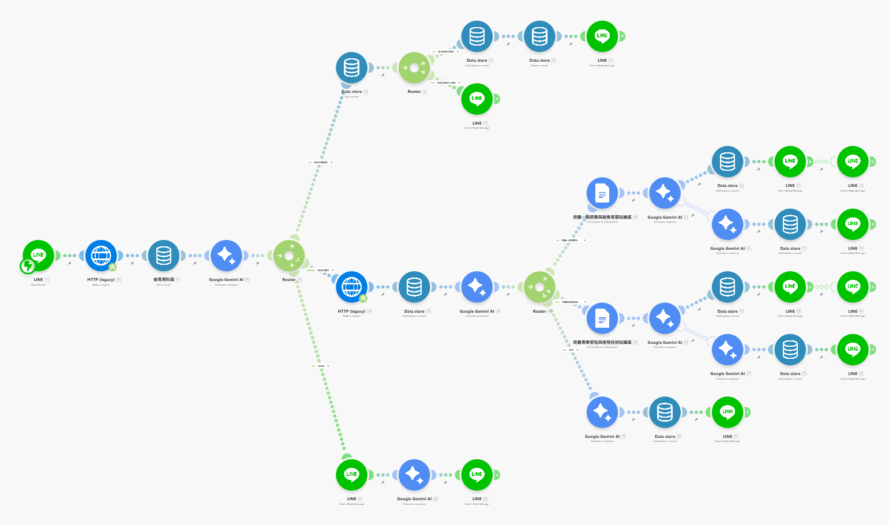

在營運實體零售業務的場景中，面對大量且重複性高的進線諮詢，傳統依賴人力的處理模式將導致資源嚴重耗損。同時，常規的規則導向 (Rule-based) 機器人缺乏語意理解能力，無法處理非標準化提問。為最佳化人力配置並維持服務品質，本專案利用 Make 平台整合 LINE Messaging API、Google Workspace 與 LLM，建構一套具備意圖識別 (Intent Recognition) 與檢索增強生成 (RAG) 能力的自動化客服系統。

# 系統規格與架構目標
本專案的核心目標在於建立一個可擴展的自動化分流機制，具體功能模組化需求如下：
-
意圖識別與流量分發：自動判定使用者語意，區分常規技術諮詢與需人工介入之特例狀況。
-
檢索增強生成 (RAG) 實作：依據問題分類，動態調用外部領域知識庫（如 Google 文件）作為 LLM 運算基礎，降低生成幻覺 (Hallucination)。
-
狀態追蹤與上下文管理：建立使用者實體 (Entity) 資料庫，記錄互動歷程以提供具備上下文感知的連貫性對話。
-
異常升級機制 (Escalation)：當系統判定輸入超出 AI 處理邊界，即時觸發人工客服推播通道。
# 系統自動化工作流設計 (Workflow Design)
在 Make 的視覺化編輯器中，我將業務邏輯拆解為多個獨立的節點 (Nodes)。各模組間透過標準化的資料結構傳遞狀態，確保系統的低耦合性：
1. 身分鑑別與資料庫初始化
系統接收 Webhook 觸發後，透過 HTTP 模組呼叫 LINE API 擷取 userId 作為主鍵 (Primary Key)。
進入資料存放區檢索：若為新進節點，則執行初始化建檔程序；若為既有節點，則載入歷史對話陣列，為 LLM 準備上下文參數。
2. 節點一：意圖識別與路由決策
配置專屬的 Prompt Engineering，將首層 LLM 設定為「意圖分類器」。
輸入文本經特徵提取後，判定是否具備「尋求人工客服」之意圖。模型輸出被嚴格限制為布林值 (Boolean)，作為控制後續執行路徑的分流閥 (Router)。
3. 節點二：領域分類與檢索增強
判定為常規詢問的流量將進入次層網路。第二組 LLM 負責將問題細分為「B2C 銷售」或「專業技術支援」。
依據此分類標籤，系統動態指向特定的 Google 文件，擷取相應的文本內容，完成檢索增強生成 (RAG) 的前置數據準備。
4. 節點三：LLM 最終回覆生成
系統整併「原始提問」、「歷史上下文」與「檢索知識庫」做為最終 Prompt 變數。
• 約束生成：強制 LLM 依據檢索文本生成結構化解答，避免發散。
• 合規性控制：底層邏輯自動附加醫療免責聲明，確保資訊輸出之安全性。
• 狀態寫回：將問答結果持久化存入資料庫，完成該次會話週期。
5. 節點四：人工介入防線 (Human-in-the-loop)
若首層節點觸發人工介入條件，系統將阻斷生成邏輯，向客戶端發送標準化安撫訊息。
同時，將原始輸入文本連同使用者 UID 打包，透過獨立的 API 通道推播至管理端，確保異常事件獲得零延遲的專人處理。
# 系統上線成效評估 (Performance Evaluation)
自動化架構部署後，對營運指標產生了具體的優化：
- 處理延遲極小化：系統成功攔截逾 90% 的 L1 常規諮詢，平均回應時間 (ART) 由人力處理的數小時縮減至系統推論的數秒級別。
- 服務覆蓋率最大化：達成 24/7 的非同步服務響應機制，有效消除非營業時段的服務空窗期。
- 資源重分配：將寶貴的人力算力從低維度的重複性任務中釋放，轉移至高複雜度問題排障與核心業務拓展。
# 系統整合的反思與擴展性
本次專案驗證了 Make 作為現代化系統架構中「API 聚合層 (API Orchestrator)」的優勢：
- 低耦合架構：透過視覺化流程，系統模組間的依賴度極低。開發者可輕易抽換底層的 LLM 模型或知識庫來源。
- 迭代成本低：針對 AI 產出的微調，無須改寫底層程式碼，僅需調整對應節點的 Prompt 參數即可快速收斂最佳解。
- 領域適應性：本專案證實，在缺乏龐大算力進行模型微調 (Fine-tuning) 的前提下，透過嚴謹的提示詞工程與 RAG 架構，依然能使通用型大語言模型勝任高度專業化的垂直領域任務。
此自動化工作流並非受限於特定零售產業。其底層架構具備高度泛用性，只需抽換檢索資料庫與重新定義角色邊界，即可平滑移植至任何需處理高併發非結構化詢問之業務場景。